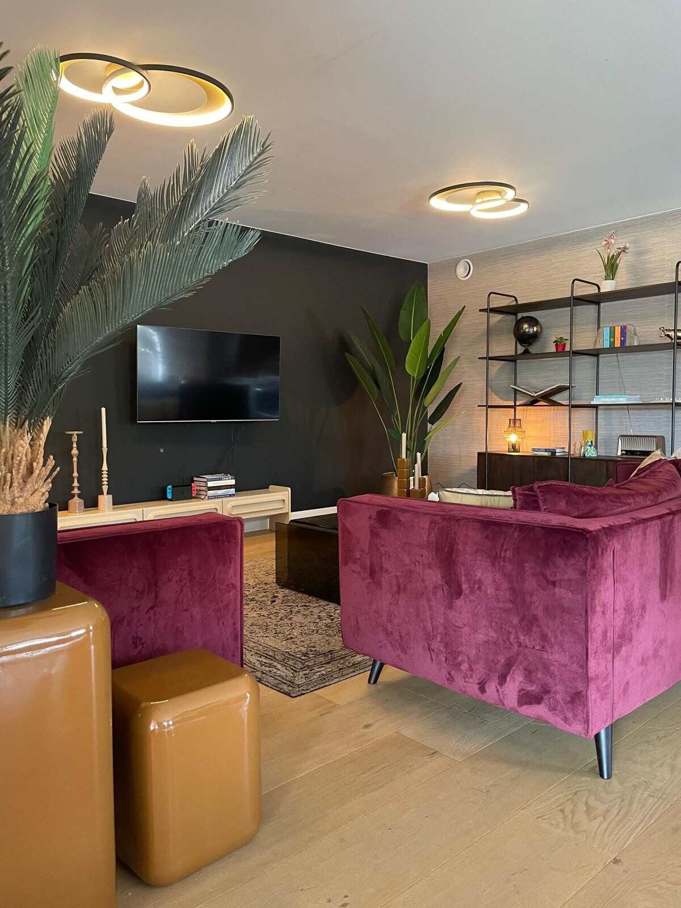

Ruimtes met Karakter & Bezieling.
Een selectie van interieurs waarvoor wij kleuradvies, styling en realisatie verzorgden. Van een complete woonkamer tot een ministyling van één hoek — altijd op zoek naar de balans tussen indeling, kleur, licht en materiaal.
Woonkamers, eethoeken, hallen en winkelinrichting.
Advies in de winkel, advies aan huis en styling aan huis.
Loop binnen in onze winkel aan de Eindhovenseweg in Valkenswaard.

Zitmeubelen
Fluwelen banken in fuchsia
Een uitgesproken kleur die warmte en karakter geeft aan de zithoek.
Kleuradvies
Donkere accentwand
Een diepe tint die de tv-wand laat wegvallen en de ruimte omarmt.
Verlichting
Gouden ringlampen
Sfeerverlichting die de ruimte groter en warmer laat voelen.
Fluweel & Diepe Tinten
Een woonkamer die durft. Een donkere accentwand laat de tv wegvallen, fluwelen banken in diep fuchsia geven warmte en karakter, en gouden ringlampen zorgen voor sfeer. Planten, een vintage vloerkleed en glanzende okerkleurige bijzettafels maken het af.
“Met verlichting kunt u een ruimte groter laten lijken en de sfeer bepalen.”
Projecten & Interieurs
Kleuradvies, styling en realisatie bij klanten thuis — en een aantal ministylings van één hoek of wand.
Geïnspireerd? Breng harmonie & karakter in uw ruimte.
Of het nu gaat om een kleur- en lichtplan, styling aan huis of een zitmeubel uit ons eigen label: we helpen u graag, in onze winkel in Valkenswaard of bij u thuis.